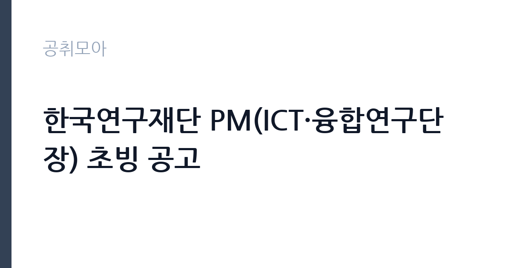

[공공기관] 한국연구재단 PM(ICT·융합연구단장) 초빙 공고
한국연구재단 · 대전 · 마감 2026-11-16 (D-21) · 출처 잡알리오

한눈에 보는 모집 조건
| 기관 | 한국연구재단 |
|---|---|
| 공고명 | 한국연구재단 PM(ICT·융합연구단장) 초빙 공고 |
| 고용형태 | 기간제 |
| 근무지 | 대전 |
| 게시일 | 2026-10-26 |
| 마감일 | 2026-11-16 (D-21) |
지원자격, 이렇게 읽으세요
- 공공기관 채용공시
- 세부 조건은 원문 공고문 확인
기간제 근로자는 근로계약 기간이 정해진 신분입니다. 계약 기간과 갱신 가능 여부가 근로계약서에 명시되며 기간 만료 시 근로관계가 종료됩니다. 결원 보충이나 특정 사업 기간에 맞춰 채용되는 경우가 많아 업무 범위가 명확합니다. 이번 공고는 한국연구재단가 직접 진행하는 자체 전형입니다. 연구직은 전공과 학위가 가장 중요한 기준입니다. 석사 이상을 요구하는 공고가 많고, 특정 전공을 명시하는 경우에는 유사 전공 인정 범위를 확인해야 합니다. 관련 분야 연구 경력과 논문 실적을 우대하며 실적은 증빙 자료로 제출해야 합니다. 연구 과제 참여 이력과 데이터 분석 도구 활용 능력도 평가 대상입니다. 채용 조건과 처우는 공고문에 명시되어 있으므로 원문을 확인하십시오. 제출서류는 공고문에 적힌 순서대로 정리하면 담당자가 확인하기 쉽습니다. 동일 직무 경력자와 경쟁하게 되므로, 관련 경험이 있다면 증명서에 업무 내용이 구체적으로 적히도록 요청하십시오. 공고문의 응시자격 표를 보면 자격 항목이 여러 줄로 나뉘어 있으므로, 각 줄을 하나씩 체크하며 본인 해당 여부를 표시해 두면 누락을 줄일 수 있습니다. 이 공고 원문에 적힌 응시 조건 문구는 '해당 학문(기술)단 소관 학문(기술)분야에 탁월한 전문성과 소관 사업에 대한 사업경영(관리) 능력을 겸비한 자로서, 박사학위 소지자인 경우 연구경력 또는 연구행정경력 15년 이상, 석사학위 소지자인 경우 연구경력 또는 연구행정경력 20년 이상인 전문가' / '※ 자격요건에서 말하는 ‘연구경력’이라 함은 대학(교) 및 공공·민간 연구소 등에서의 해당 분야 연구 수행경력을 의미하고, ‘연구행정경력’이라 함은 대학(교), 공공·민간 연구소 및 연구지원기관 등에서의 연구 수행과 관련된 행정경력을 의미함'입니다. 문구를 그대로 읽고 본인 해당 여부를 하나씩 표시해 두면 서류 단계에서 탈락하는 일을 줄일 수 있습니다.
이 공고의 포인트
이 건은 한국연구재단가 같은 시기에 낸 2개 모집분야 가운데 연구직 직무입니다. 다른 직무 공고와 요건이 다르므로 지원 전에 모집분야 표를 대조해야 합니다. 이 공고의 첫 번째 포인트는 고용 형태입니다. 계약 기간이 정해져 있어 근무 종료 시점이 명확합니다. 그만큼 짧은 기간에 어떤 실적을 남길지가 중요해집니다. 두 번째는 업무 범위가 명확하다는 점입니다. 연구직 직무로 채용되므로 배치 이후 담당 업무가 크게 흔들리지 않습니다. 세 번째는 근무지입니다. 대전 지역 근무로 수도권 공고에 비해 지원자 분포가 넓지 않아 상대적으로 경쟁이 분산되는 경우가 있습니다. 지역 기반 채용이라 거주지와 통근 가능성이 실질적인 판단 기준이 됩니다. 같은 직무로 함께 올라온 공고 가운데 접수 마감이 가장 늦은 편이라 준비 시간을 상대적으로 확보할 수 있습니다. 선발 인원은 공고문에 명시되어 있으니 모집분야 항목을 함께 확인하십시오.
전형은 어떻게 진행되나
전형은 서류심사와 면접심사를 기본으로 하고 직무에 따라 필기나 실기, 체력검정이 추가됩니다. 서류 단계에서는 응시자격 충족 여부와 제출서류 형식을 확인하며 이 단계에서 탈락하는 지원자가 적지 않습니다. 면접은 직무 이해도와 경험을 확인하는 방식으로 진행되고 발표는 개별 통보나 홈페이지 게시로 이뤄집니다. 최종합격 이후에는 결격사유 조회와 채용 신체검사가 이어지며 이 절차에서 문제가 확인되면 합격이 취소될 수 있습니다. 구체적인 전형 단계와 배점은 공고문에 표로 정리되어 있으니 원문을 기준으로 준비하십시오. 경력 증명서에 직무 내용이 적혀 있지 않으면 인정받지 못할 수 있으므로 상세 기재를 요청하십시오.
원문에서 확인한 전형 방식
해당 학문(기술)단 소관 학문(기술)분야에 탁월한 전문성과 소관 사업에 대한 사업경영(관리) 능력을 겸비한 자로서, 박사학위 소지자인 경우 연구경력 또는 연구행정경력 15년 이상, 석사학위 소지자인 경우 연구경력 또는 연구행정경력 20년 이상인 전문가 ※ 내부직원이 응모할 경우 선임연구원 이상이며 상기조건 충족자 ※ 자격요건에서 말하는 ‘연구경력’이라 함은 대학(교) 및 공공·민간 연구소 등에서의 해당 분야 연구 수행경력을 의미하고, ‘연구행정경력’이라 함은 대학(교), 공공·민간 연구소 및 연구지원기관 등에서의 연구 수행과 관련된 행정경력을 의미함
이런 분께 추천해요
- 관련 전공 석사 이상 학위를 가진 분
- 연구 과제 수행과 보고서 작성 경험이 있는 분
- 데이터 분석 도구를 실제로 활용할 수 있는 분
지원 전 체크리스트
- 응시자격 요건과 경력 기준을 충족하는가 — 경력은 증명서로 입증해야 합니다
- 계약 기간과 근무 시작일·종료일을 확인했는가
- 제출서류 목록을 모두 준비했는가 — 누락 시 서류 단계에서 탈락합니다
- 접수 마감 2026-11-16 이전에 접수 방식을 확인해 제출했는가
모집 일정과 제출 타이밍
2026-10-26에 공고가 올라왔고 접수는 2026-11-16까지입니다. 남은 기간은 21일이며, 이 기간에 자격증 사본과 경력증명서, 주민등록등본 같은 기본 서류를 모두 준비해야 합니다. 경력증명서는 발급에 며칠이 걸리는 경우가 있으니 가장 먼저 신청하십시오. 접수는 온라인과 우편·방문으로 나뉘는 경우가 많고, 우편 접수는 도착 기준으로 판정되므로 마감일 소인만 믿으면 안 됩니다. 면접 일정은 서류 발표 후 개별 통보되므로 제출 후에도 연락을 받을 수 있도록 유지해야 합니다. 제출 서류는 공고문에 적힌 순서대로 정리하면 담당자가 확인하기 쉬워 누락이 줄어듭니다.
직무 이해하기: 공공기관
한국연구재단은 국가 연구개발 사업의 기획과 평가, 학술 지원을 담당하는 준정부기관입니다. PM(사업단장)은 특정 분야 연구 사업의 기획과 평가를 총괄하는 직위로, 해당 분야 연구 경력과 학위가 핵심 기준입니다. 초빙 직위는 임용 기간과 처우가 개별로 정해집니다. 연구직은 정책이나 기술 과제를 설계하고 데이터를 수집·분석해 결과물을 만드는 일을 합니다. 문헌 검토와 조사 설계, 통계 분석, 보고서 작성이 기본 주기이고 과제에 따라 현장 조사나 실험이 붙습니다. 연구 결과를 논문이나 정책 제안으로 정리하고 대외 발표와 학술 교류도 업무에 포함됩니다. 계약 기간이 정해진 과제 기반 채용이 많아 수행 과제와 성과 목표를 입사 초에 확정하는 경우가 일반적입니다. 근무조는 사업 일정과 기상 상황에 맞춰 편성되므로 면접에서 배치 구역을 확인하는 것이 좋습니다. 현장 업무와 사무 업무의 비중은 기관의 사업 일정에 따라 계절별로 달라집니다. 이 건의 근무 대상 지역·부서는 원문 기준 'ICT·융합연구단장'입니다 원문에 '※ 자격요건에서 말하는 ‘연구경력’이라 함은 대학(교) 및 공공·민간 연구소 등에서의 해당 분야'라는 조건이 명시되어 있습니다.
자기소개서 작성 팁
연구직 지원서는 연구 역량을 구조적으로 보여줘야 합니다. 수행 과제, 사용한 방법론, 도출한 결과와 기여도를 한 문단씩 정리하십시오. 지원 기관의 사업과 본인 연구를 연결하는 부분이 특히 중요합니다. 채용 후 하고 싶은 연구 주제를 구체적으로 제시하면 준비도가 드러납니다. 구성은 지원 동기, 직무 경험, 기여 방안 순서가 무난합니다. 지원 동기는 한국연구재단의 사업 중 본인이 관심을 가진 부분을 한 가지로 좁혀 서술하고 추상적인 표현은 줄이십시오. 직무 경험은 담당했던 업무와 규모, 결과를 수치로 제시하면 설득력이 올라갑니다. 기여 방안은 입사 후 첫 3개월과 1년 계획으로 나눠 쓰면 준비도가 드러납니다.
면접 준비 포인트
면접은 연구 경험과 방법론에 대한 질문이 중심입니다. 본인이 수행한 연구에서 가설을 어떻게 세웠고 어떤 방법으로 검증했는지 구체적으로 답해야 합니다. 연구 결과가 실제 정책이나 사업에 어떻게 쓰일 수 있는지 묻는 질문도 자주 나옵니다. 사용 가능한 분석 도구와 데이터 처리 경험을 명확히 밝히십시오. 답변 시간이 짧게 정해져 있는 경우가 있으므로 핵심 문장을 먼저 말하고 근거를 붙이는 방식이 유리합니다. 답변 시간이 짧게 정해져 있는 경우가 있으므로 핵심 문장을 먼저 말하고 근거를 붙이는 방식이 유리합니다.
급여·근무조건 읽는 법
알리오(공공기관 경영정보 공개시스템) 2025년 결산 경영공시 기준으로 한국연구재단 일반정규직 1인당 평균보수액은 9,576만원, 공시된 신입사원 초임은 5,388만원입니다. 무기계약직 1인당 평균보수액은 3,931만원으로 공시되어 정규직과 차이가 납니다. 평균보수액은 기본급에 고정수당·실적수당·성과상여금·급여성 복리후생비를 모두 합산한 값이라 월 기본급만 보고 판단하면 실제와 크게 어긋납니다. 이번 공고는 기간제 채용이라 위 정규직 평균보수는 그대로 적용되지 않습니다. 기간제 보수는 기관의 기간제 임금 기준을 따르며 계약 기간이 함께 정해집니다. 연구직의 보수는 채용 신분에 따라 크게 달라집니다. 공공기관 연구직은 기관의 연봉제 또는 직급별 임금표를 적용받고, 계약직 연구원은 계약 기간과 연봉 총액이 개별로 정해집니다. 과제 기반 채용은 인건비 예산 범위에서 연봉이 결정되므로 동일 직급이라도 과제에 따라 차이가 납니다.구체적인 금액과 성과급 조건은 공고문에서 확인하십시오. 2026년 적용 최저임금은 시급 10,320원, 월 환산 2,156,880원(주 40시간·209시간 기준)입니다. 고용노동부 고시 제2025-47호로 확정된 금액입니다. 공고문에 금액이 제시되지 않은 항목은 원문 보수표나 처우 설명에서 확인해야 하며 확인되지 않은 수치는 쓰지 않는 것이 원칙입니다. 비교할 때는 월 급여뿐 아니라 상여·명절휴가비·복지포인트·초과근무수당까지 포함한 연간 총액으로 계산하십시오. 기간제라면 계약 기간 동안의 총액을, 무기계약이라면 호봉 상승과 정년까지의 누적 소득을 기준으로 판단하는 편이 정확합니다.
자주 묻는 질문
- 선발 인원은 몇 명인가요?
공고문의 모집분야 항목에 직종별 인원이 표로 제시되어 있습니다. 첨부된 공고문 원문에서 확인하십시오. - 근무지는 어디인가요?
대전 지역의 한국연구재단 소속 근무지입니다. 세부 주소와 출퇴근 조건은 원문 공고문에서 확인할 수 있습니다. - 보수는 얼마인가요?
채용 신분(기간제)과 기관 임금 규정에 따라 정해지며 구체적인 금액은 공고문 처우 항목에 제시됩니다. 금액이 공개되지 않은 경우에는 원문의 보수표를 확인하십시오.
함께 보면 좋은 공고
[공공기관] 한국도로공사 대전충남본부 관내 지사(천안, 대전, 영동, 당진, 공주, 부여) 제설 기간제근로자(정비원) 채용 — 마감 2026-11-03[공공기관] 한국도로공사 대전충남본부 관내 지사(천안, 대전, 영동, 당진, 공주, 부여) 제설 기간제근로자(운전원) 채용 — 마감 2026-11-03[공공기관] 한국도로공사 대전충남본부 관내 지사(천안, 대전, 영동, 당진, 공주, 부여) 제설 기간제근로자(도로관리원) 채용 — 마감 2026-11-03출처: 잡알리오 공개정보를 바탕으로 공취모아가 정리한 안내글입니다. 모집 조건·일정은 변경될 수 있으니 지원 전 반드시 원문 공고문을 확인하세요. 본 글은 정보 제공용이며 합격을 보장하지 않습니다.